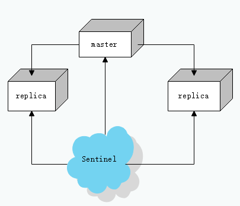

单纯的使用redis主从复制存在着很多的问题，其中一个就是当主节点宕机之后，无法自动恢复故障，需要手动重启主节点或者将从节点升格为主节点，这在实际的应用中维护成本太高，而且很难得到及时的处理。redis提供了哨兵模式解决这个问题。
概述
哨兵模式是redis提供的一种特殊模式，它运行在一个单独的进程中，通过定时发送命令获取redis实例的状态来监控多个redis，当发现主节点宕掉，会自动将一个从节点切换为主节点，以保证整个主从复制结构可以正常的运行。其基本模型如下：

在哨兵模式当中，往往会存在多个哨兵同时对redis集群进行监控，哨兵之间也会相互监控，以保证整个哨兵系统的稳定与安全；一个健壮的哨兵系统至少有3个哨兵；
基本原理
在哨兵模式中，哨兵们主要完成两件工作：
- 定时的发送命令获取主节点和从节点的运行状态；
- 当主节点发生故障导致不可达之后，进行故障转移；
获取节点信息
哨兵的主要工作之一，就是监控各个节点的状态。通常哨兵每秒发送一次ping命令给系统中所有的实例，每十秒发送一次info命令给所有监控的节点以获取节点信息，每两秒通过订阅/发布向其他哨兵通报自己的状态。
你可以使用以下命令查看主节点的状态：1
2
3
4
5
6
7
8
9
10
11
12
13
14
15
16
17
18
19
20
21
22
23
24
25
26
27
28
29
30
31
32
33
34
35
36
37
38
39
40
41
42 redis-cli -p sentinel-port # 请务必保证哨兵已经运行
sentinel master mymaster
1) "name"
2) "mymaster"
3) "ip"
4) "master-ip"
5) "port"
6) "6379"
7) "runid"
8) "c950cc1fd3c5e450646801e724fa8819c5fb2398"
9) "flags"
10) "master"
11) "link-pending-commands"
12) "0"
13) "link-refcount"
14) "1"
15) "last-ping-sent"
16) "0"
17) "last-ok-ping-reply"
18) "341"
19) "last-ping-reply"
20) "341"
21) "down-after-milliseconds"
22) "60000"
23) "info-refresh"
24) "7450"
25) "role-reported"
26) "master"
27) "role-reported-time"
28) "7582"
29) "config-epoch"
30) "0"
31) "num-slaves"
32) "2"
33) "num-other-sentinels"
34) "2"
35) "quorum"
36) "2"
37) "failover-timeout"
38) "180000"
39) "parallel-syncs"
40) "1"
可以看见此命令打出了一些有关主节点和集群的一些信息，其中：
- num-slaves 值为2表示哨兵已在此集群中发现了两个从节点；
- num-other-sentinels 值为2表示哨兵已经探知到另外两个哨兵的存在；
你也可以使用以下两个命令查看从节点和其他哨兵的信息：1
2 sentinel replicas mymaster //查看从节点的信息
sentinel sentinels mymaster //查看其他哨兵信息
故障转移
故障转移是一个比较复杂的过程，它依赖两个重要概念：主观下线（SDOWN） 和客观下线（ODOWN）。
主观下线表示本地的哨兵确认节点无法访问。一个主节点被标记为主观下线意味着此节点在指定的时间内没有回复本地哨兵的ping指令或者回复无效，该时间由参数 down-after-milliseconds 指定，仅仅满足主观下线并不能触发故障转移。
当哨兵发现主节点主观下线之后，会通知其他的哨兵，并询问他们是否能访问此节点，当超过 quorum 数的哨兵认为此节点主观下线时，此节点将会被标记为客观下线。
notice: 主观下线的概念只适用于主节点，其他从节点包括哨兵只有客观下线的状态，而且此客观下线状态并不会被选举执行故障转移
当哨兵发现主节点被标记为客观下线之后，会和其他节点协商选举出领头哨兵并选举出合适的从节点作为新的主节点，由领头哨兵执行故障转移过程。
领头哨兵选举
每个发现主节点客观下线的哨兵，都可以参与领头哨兵选举，并要求其他哨兵选取自己。选举时先到先得，只有获取到大多数哨兵支持，才能成为领头哨兵。当一个哨兵被授权进行故障转移时，将为新的主节点生成一个epoch作为新主节点的版本号。
notice: 如果一个哨兵系统中，只有少数的哨兵正常运行，则不会有哨兵当选领头哨兵，也就无法进行故障转移过程。
新主节点选举
当领头哨兵准备进行故障转移时，一个合适的从节点需要被选举出来，成为新的主节点。该从节点必须满足一下要求：
该节点从旧的主节点断开连接的时间time1，不得大于主节点配置超时（down-after-milliseconds）的十倍加上领头节点从发现旧主节点客观下线到执行故障转移的时间time2，
即：time1 < down-after-milliseconds * 10 + time2 。
选举只会从满足上述要求的从节点中寻找更合适的节点。节点的选举需要评估节点的以下信息：
- 从节点优先级
- 复制偏移量
- 运行ID
节点的优先级由节点的配置选项 replica-priority 指定，优先值越小，优先级越低，但是如果一个节点的优先级被设置为 0 ，则此节点将永远不会被设置为主节点。如果优先级一样则复制偏移量越大的节点将会被选择。如果偏移量一样，则运行id最小的节点将会被选择。
配置广播
领头哨兵将发送 replicaof no one 指令给选举的从节点并且将其切换为主节点。当这一步完成之后，故障转移被认为已经成功，随后领头哨兵将会通过订阅/发布，将新的主节点配置广播给其他的哨兵已更新主节点配置。其他哨兵收到主节点配置之后，会与本地比较主节点配置的版本号，即epoch，如果新配置的epoch更大，则更新自己的主节点配置，最终所有的哨兵都将更新主节点配置到最新状态。
部署示例
一个简单的sentinel配置如下：1
2
3
4
5
6
7
8port 5000 # sentinel运行在5000端口
sentinel monitor mymaster 127.0.0.1 6379 2 # sentinel将监控在本地的6379端口的主节点 quorum 为2
sentinel down-after-milliseconds mymaster 5000 # 下线超时时间为5秒
sentinel failover-timeout mymaster 60000 # 故障转移超时时间为1分钟
sentinel parallel-syncs mymaster 1 # 同时与主节点进行数据同步的节点数量
dir './' # 哨兵的工作目录
logfile './sentinel_5000.log' # 哨兵日志
daemonize yes # 开启守护进程
我们将在三个不同的虚拟机中启动三个节点和三个哨兵。
先启动redis主从复制，然后在启动哨兵并使用cli连接：1
2 redis-sentinel /path/to/sentinel-config
redis-cli -p 5000
notice: 注意要保证哨兵和节点间能正常的进行访问。
使用以下命令可以查看各节点和哨兵的状态：1
2
3 sentinel master mymaster //查看主节点
sentinel replicas mymaster //查看从节点
sentinel sentinels mymaster //查看哨兵
你可以使用 debug sleep 指令来模拟主节下线的状态，然后查看日志，会发现哨兵会进行故障转移过程：1
2
3
4
5
6
7
8
9
10
11
12
13
14
15
166725:X 12 Sep 2019 06:37:31.853 # +sdown master mymaster 192.168.0.129 6379
6725:X 12 Sep 2019 06:37:31.936 # +odown master mymaster 192.168.0.129 6379 #quorum 2/2
6725:X 12 Sep 2019 06:37:31.936 # +new-epoch 3
6725:X 12 Sep 2019 06:37:31.936 # +try-failover master mymaster 192.168.0.129 6379
6725:X 12 Sep 2019 06:37:31.971 # +vote-for-leader 32b0b77dbb8670f79e913be1661f8f56b377d18f 3
6725:X 12 Sep 2019 06:37:31.973 # 445f225fc2e762442aa95d2924e93b926ec75e7f voted for 445f225fc2e762442aa95d2924e93b926ec75e7f 3
6725:X 12 Sep 2019 06:37:32.017 # c762cd843b5041fd8d9089bee9278c90177d69e9 voted for 32b0b77dbb8670f79e913be1661f8f56b377d18f 3
6725:X 12 Sep 2019 06:37:32.038 # +elected-leader master mymaster 192.168.0.129 6379
6725:X 12 Sep 2019 06:37:32.038 # +failover-state-select-slave master mymaster 192.168.0.129 6379
6725:X 12 Sep 2019 06:37:32.105 # +selected-slave slave 192.168.0.128:6379 192.168.0.128 6379 @ mymaster 192.168.0.129 6379
6725:X 12 Sep 2019 06:37:32.105 * +failover-state-send-slaveof-noone slave 192.168.0.128:6379 192.168.0.128 6379 @ mymaster 192.168.0.129 6379
6725:X 12 Sep 2019 06:37:32.160 * +failover-state-wait-promotion slave 192.168.0.128:6379 192.168.0.128 6379 @ mymaster 192.168.0.129 6379
6725:X 12 Sep 2019 06:37:32.999 # +promoted-slave slave 192.168.0.128:6379 192.168.0.128 6379 @ mymaster 192.168.0.129 6379
6725:X 12 Sep 2019 06:37:32.999 # +failover-state-reconf-slaves master mymaster 192.168.0.129 6379
6725:X 12 Sep 2019 06:37:33.079 * +slave-reconf-sent slave 192.168.0.179:6379 192.168.0.179 6379 @ mymaster 192.168.0.129 6379
6725:X 12 Sep 2019 06:37:34.024 * +slave-reconf-inprog slave 192.168.0.179:6379 192.168.0.179 6379 @ mymaster 192.168.0.129 6379
你可以使用以下指令来查看当前主节点的ip1
2
3 sentinel get-master-addr-by-name mymaster
1) "192.168.0.129"
2) "6379"